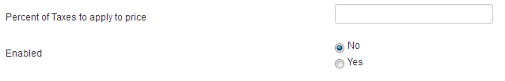

To create a tax, you have to click on the "Taxes" tab on Invoicing. You can see the list of your tax, you can chose to display only the enables or disabled one by select the option you want in the only filter for the view.
Beware, you have to create your taxes before creating any invoice, order or quote cause there is no way to create them in otheer view. For each product, the field "Tax" is a select dropdown containing tax that have been created with this view.